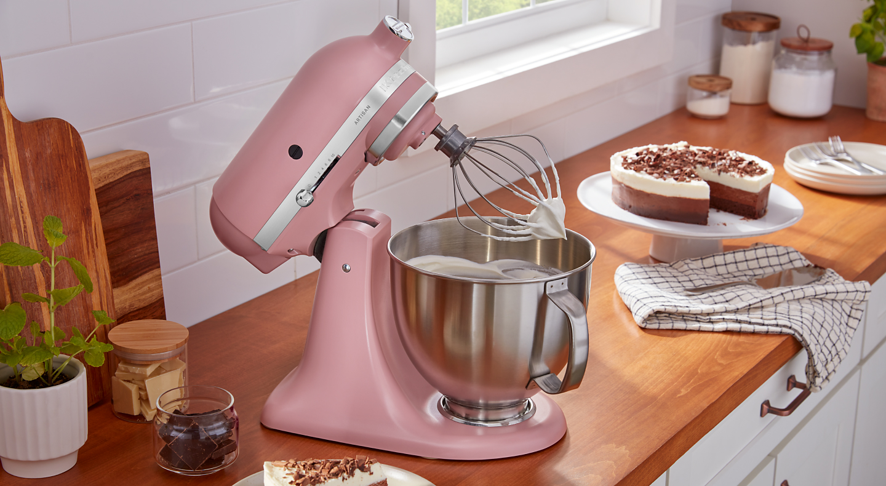

Ingredients
- 1 ⅓ cups warm water (110 degrees F/45 degrees C)
- 1 ½ teaspoons olive oil
- 4 cups unbleached all-purpose flour
- 1 tablespoon light brown sugar
- 1 ½ teaspoons salt
- 3 cups all-purpose flour
- 1 ½ teaspoons active dry yeast
DIRECTIONS
- Preheat oven to 475 degrees F (245 degrees C).
- Once the dough has risen, turn it out onto a lightly floured surface.
- Roll dough into thin flat circles, about 8 inches in diameter.
- Cook two at a time on preheated baking sheets or a baking stone until puffed up and golden brown, about 5 minutes
- Repeat for remaining loaves.